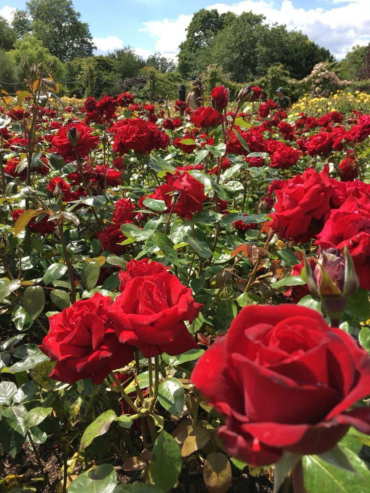
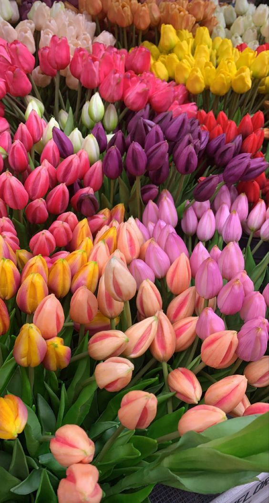

MAWAR MERAH
Simbol cinta dan keindahan. Mawar hadir dalam berbagai warna dengan makna berbeda—cinta, persahabatan, rasa hormat, dan kasih sayang.

TULIP
Elegan dan sederhana — tulip melambangkan kebahagiaan serta cinta yang tulus. Cocok untuk menyampaikan rasa kagum.

Keindahan Yang Menenangkan
Taman bunga adalah tempat persembunyian kecil dari hiruk-pikuk dunia. Aromanya menenangkan, warnanya menghidupkan suasana, dan kelembutannya mampu meredakan hati.
 Bunga Kebahagiaan
Bunga Kebahagiaan